Build a real-world DevOps pipeline from scratch on two VPS servers. Every
git push automatically tests, builds, and deploys a containerised
Flask app — with Prometheus + Grafana monitoring both Linux and Windows servers,
and Alertmanager sending Slack and email alerts.
apt update && apt upgrade -y
git config --global user.name "Your Name" git config --global user.email "you@gmail.com" git config --global init.defaultBranch main
# Generate the key ssh-keygen -t ed25519 -C "you@gmail.com" # Print the public key — copy this to GitHub cat ~/.ssh/id_ed25519.pub # Test after adding key at github.com → Settings → SSH keys ssh -T git@github.com
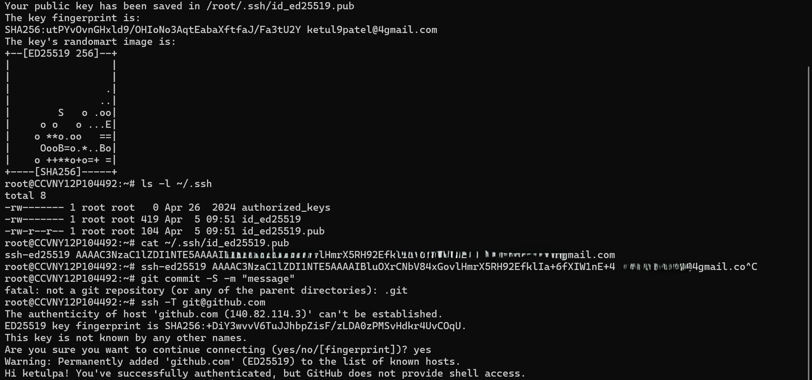
apt install -y ca-certificates curl install -m 0755 -d /etc/apt/keyrings curl -fsSL https://download.docker.com/linux/ubuntu/gpg \ -o /etc/apt/keyrings/docker.asc chmod a+r /etc/apt/keyrings/docker.asc echo "deb [arch=$(dpkg --print-architecture) \ signed-by=/etc/apt/keyrings/docker.asc] \ https://download.docker.com/linux/ubuntu \ $(. /etc/os-release && echo "$VERSION_CODENAME") stable" \ | tee /etc/apt/sources.list.d/docker.list > /dev/null apt update apt install -y docker-ce docker-ce-cli containerd.io docker-compose-plugin docker --version docker run hello-world
Create a new repo at github.com → New repository, name it devops-pipeline, then:
git clone git@github.com:YOURUSERNAME/devops-pipeline.git cd devops-pipeline mkdir -p app .github/workflows
from flask import Flask, jsonify from prometheus_flask_exporter import PrometheusMetrics app = Flask(__name__) metrics = PrometheusMetrics(app) @app.route('/') def home(): return jsonify({ "status": "running", "message": "DevOps Pipeline", "version": "1.0" }) @app.route('/health') def health(): return jsonify({"status": "healthy"}), 200 if __name__ == '__main__': app.run(host='0.0.0.0', port=5000)
flask==3.0.3 prometheus-flask-exporter==0.23.1
FROM python:3.12-slim WORKDIR /app COPY requirements.txt . RUN pip install --no-cache-dir -r requirements.txt COPY app.py . EXPOSE 5000 CMD ["python", "app.py"]
cd ~/devops-pipeline/app docker build -t devops-app . docker run -d -p 5000:5000 --name devops-app devops-app curl http://localhost:5000 curl http://localhost:5000/health curl http://localhost:5000/metrics
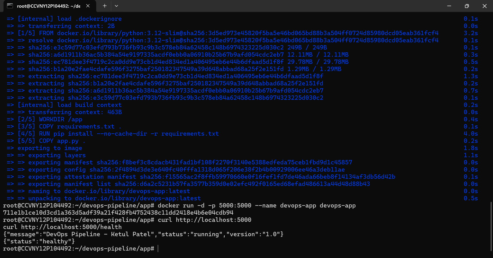
# Generate dedicated deploy key (no passphrase) ssh-keygen -t ed25519 -f ~/.ssh/github_actions \ -C "github-actions-deploy" -N "" # Add public key to authorised_keys cat ~/.ssh/github_actions.pub >> ~/.ssh/authorized_keys # Print private key — copy everything for GitHub Secrets cat ~/.ssh/github_actions
VPS_HOST — your Linux VPS IPVPS_USER — your SSH usernameVPS_SSH_KEY — entire private key including BEGIN/END lines
name: CI/CD Pipeline on: push: branches: [main] jobs: deploy: runs-on: ubuntu-latest steps: - name: Checkout code uses: actions/checkout@v4 - name: Build Docker image run: docker build -t devops-app ./app - name: Deploy to VPS uses: appleboy/ssh-action@v1 with: host: ${{ secrets.VPS_HOST }} username: ${{ secrets.VPS_USER }} key: ${{ secrets.VPS_SSH_KEY }} script: | cd ~/devops-pipeline git pull origin main docker stop devops-app || true docker rm devops-app || true docker build -t devops-app ./app docker run -d -p 5000:5000 --name devops-app devops-app
git add . git commit -m "Phase 2: Add GitHub Actions CI/CD workflow" git push origin main
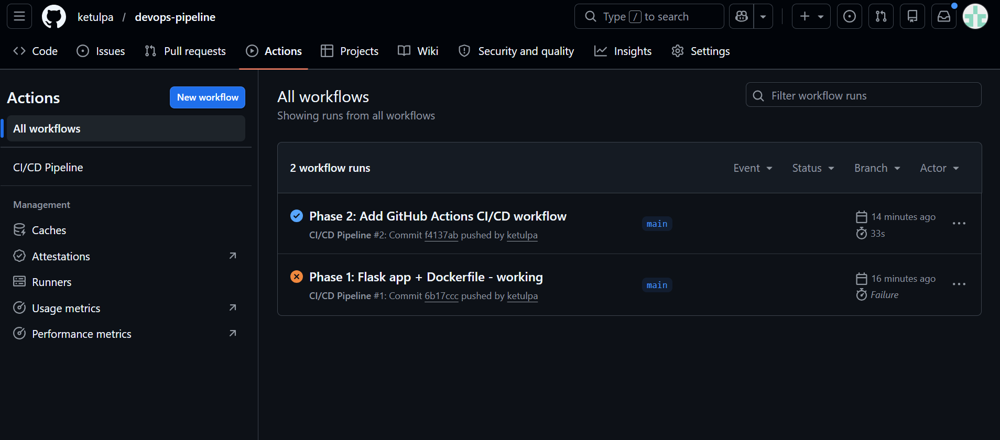
Edit app.py, change version from "1.0" to "2.0", commit and push. No manual Docker commands needed — the pipeline does everything.
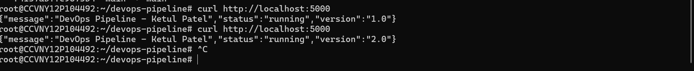
apt install -y nginx systemctl enable nginx && systemctl start nginx
server { listen 80; server_name _; location / { proxy_pass http://127.0.0.1:5000; proxy_set_header Host $host; proxy_set_header X-Real-IP $remote_addr; proxy_set_header X-Forwarded-For $proxy_add_x_forwarded_for; } }
ln -s /etc/nginx/sites-available/devops-app /etc/nginx/sites-enabled/ rm /etc/nginx/sites-enabled/default nginx -t && systemctl reload nginx curl http://localhost:80
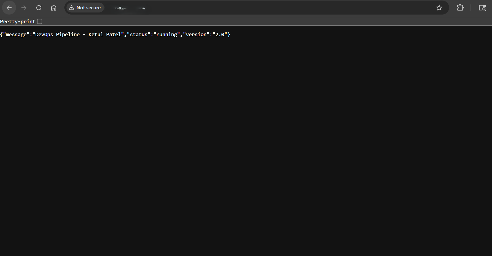
wget https://github.com/prometheus/node_exporter/releases/download/v1.8.0/node_exporter-1.8.0.linux-amd64.tar.gz tar -xvf node_exporter-1.8.0.linux-amd64.tar.gz mv node_exporter-1.8.0.linux-amd64/node_exporter /usr/local/bin/ rm -rf node_exporter-1.8.0.linux-amd64* cat > /etc/systemd/system/node_exporter.service << 'EOF' [Unit] Description=Node Exporter After=network.target [Service] User=root ExecStart=/usr/local/bin/node_exporter [Install] WantedBy=multi-user.target EOF systemctl daemon-reload systemctl enable --now node_exporter
wget https://github.com/prometheus/prometheus/releases/download/v2.51.0/prometheus-2.51.0.linux-amd64.tar.gz tar -xvf prometheus-2.51.0.linux-amd64.tar.gz mv prometheus-2.51.0.linux-amd64/prometheus /usr/local/bin/ mkdir -p /etc/prometheus /var/lib/prometheus rm -rf prometheus-2.51.0.linux-amd64*
global: scrape_interval: 15s scrape_configs: - job_name: 'linux-vps' static_configs: - targets: ['localhost:9100'] - job_name: 'flask-app' static_configs: - targets: ['localhost:5000'] - job_name: 'windows-vps' static_configs: - targets: ['WINDOWS_VPS_IP:9182']
Download the .msi from the windows_exporter releases page and run it with all defaults. Then open the firewall:
New-NetFirewallRule -DisplayName "windows_exporter" ` -Direction Inbound -Protocol TCP ` -LocalPort 9182 -Action Allow
apt install -y software-properties-common wget -q -O - https://packages.grafana.com/gpg.key | apt-key add - echo "deb https://packages.grafana.com/oss/deb stable main" \ > /etc/apt/sources.list.d/grafana.list apt update && apt install -y grafana systemctl enable --now grafana-server
Access at http://YOUR_VPS_IP:3000 — login admin/admin. Add Prometheus data source, then import dashboard IDs 1860 (Linux) and 20763 (Windows).
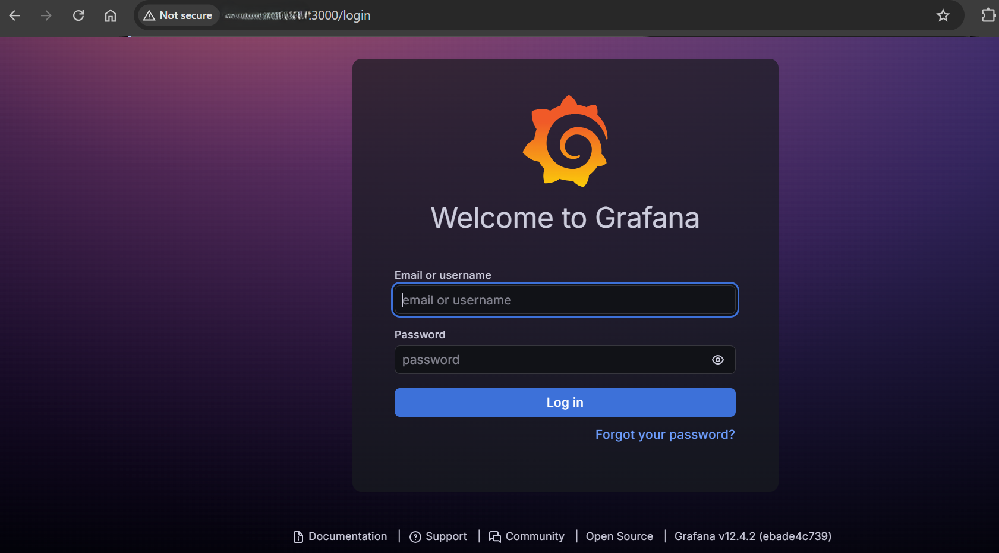
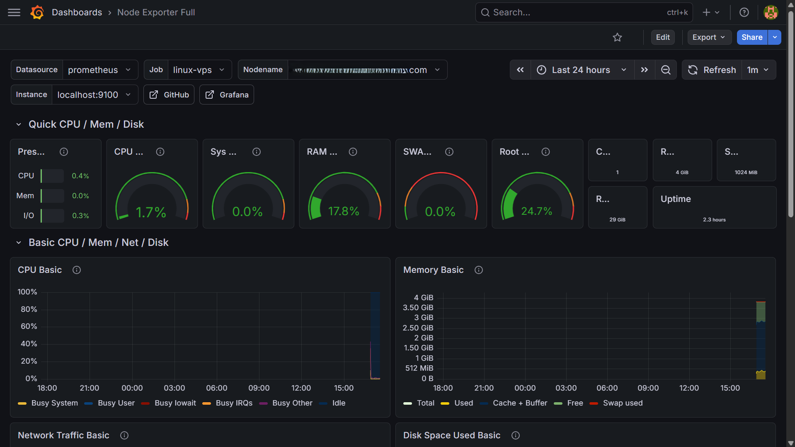
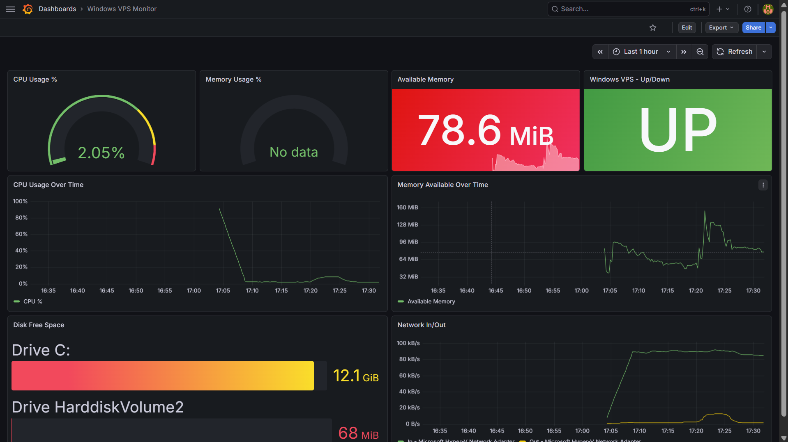
wget https://github.com/prometheus/alertmanager/releases/download/v0.27.0/alertmanager-0.27.0.linux-amd64.tar.gz tar -xvf alertmanager-0.27.0.linux-amd64.tar.gz mv alertmanager-0.27.0.linux-amd64/alertmanager /usr/local/bin/ mv alertmanager-0.27.0.linux-amd64/amtool /usr/local/bin/ mkdir -p /etc/alertmanager /var/lib/alertmanager rm -rf alertmanager-0.27.0.linux-amd64*
Go to api.slack.com/apps → Create New App → Incoming Webhooks → Add New Webhook → pick your channel → copy the URL.
global: resolve_timeout: 5m smtp_smarthost: 'smtp.gmail.com:587' smtp_from: 'you@gmail.com' smtp_auth_username: 'you@gmail.com' smtp_auth_password: 'YOUR_GMAIL_APP_PASSWORD' smtp_require_tls: true route: receiver: 'slack-alerts' repeat_interval: 5m routes: - match: severity: critical receiver: 'slack-alerts' repeat_interval: 5m continue: true - match: severity: critical receiver: 'email-escalation' repeat_interval: 25m receivers: - name: 'slack-alerts' slack_configs: - api_url: 'YOUR_SLACK_WEBHOOK_URL' channel: '#alerts' send_resolved: true title: '{{ if eq .Status "firing" }}🔴 ALERT{{ else }}✅ RESOLVED{{ end }}: {{ .CommonLabels.alertname }}' text: '*Server:* {{ .CommonLabels.instance }}\n*Issue:* {{ .CommonAnnotations.summary }}' - name: 'email-escalation' slack_configs: - api_url: 'YOUR_SLACK_WEBHOOK_URL' channel: '#alerts' send_resolved: true email_configs: - to: 'you@gmail.com' headers: Subject: '🚨 ESCALATION: {{ .CommonLabels.alertname }} unresolved after 5 alerts'
groups: - name: server-alerts rules: - alert: InstanceDown expr: up == 0 for: 1m labels: severity: critical annotations: summary: "Server {{ $labels.instance }} is DOWN" - alert: HighCPULinux expr: 100 - (avg by(instance)(rate(node_cpu_seconds_total{mode="idle"}[5m])) * 100) > 85 for: 5m labels: severity: critical annotations: summary: "High CPU on {{ $labels.instance }}: {{ $value }}%" - alert: HighMemoryLinux expr: (1 - (node_memory_MemAvailable_bytes / node_memory_MemTotal_bytes)) * 100 > 90 for: 5m labels: severity: critical annotations: summary: "High memory on {{ $labels.instance }}: {{ $value }}%" - alert: HighCPUWindows expr: 100 - (avg by(instance)(rate(windows_cpu_time_total{mode="idle"}[5m])) * 100) > 85 for: 5m labels: severity: critical annotations: summary: "High CPU on Windows {{ $labels.instance }}: {{ $value }}%" - alert: LowDiskLinux expr: (node_filesystem_free_bytes{mountpoint="/"} / node_filesystem_size_bytes{mountpoint="/"}) * 100 < 10 for: 5m labels: severity: critical annotations: summary: "Low disk on {{ $labels.instance }}: {{ $value }}% free"
# Start Alertmanager systemctl daemon-reload systemctl enable --now alertmanager curl http://localhost:9093/-/healthy # Restart Prometheus to load rules mkdir -p /etc/prometheus/rules systemctl restart prometheus # Test — stop Flask to trigger InstanceDown alert docker stop devops-app # Wait 1 minute — check Slack docker start devops-app # Check Slack for RESOLVED message
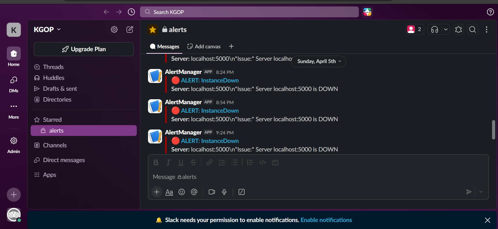
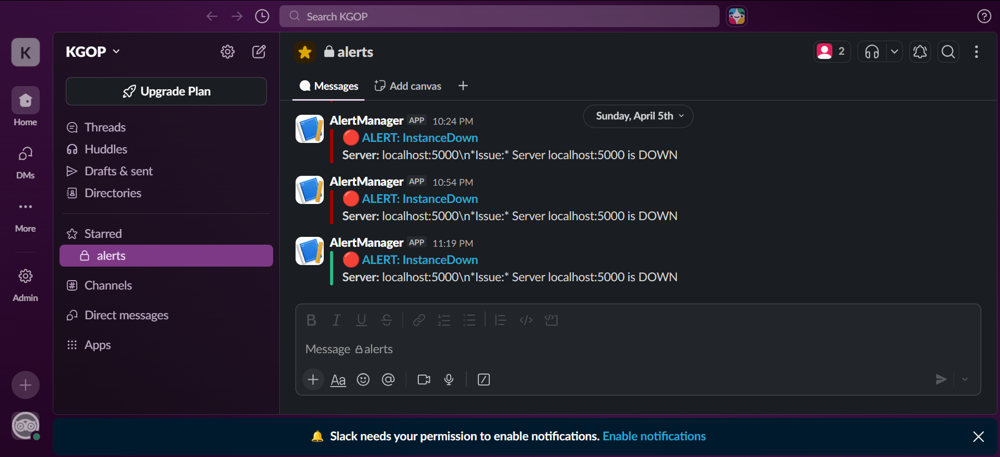
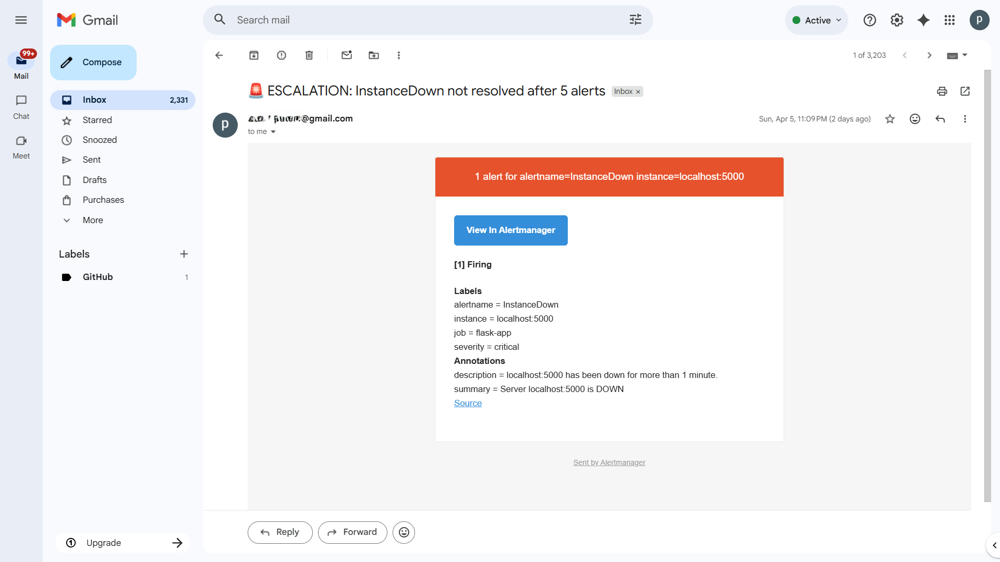